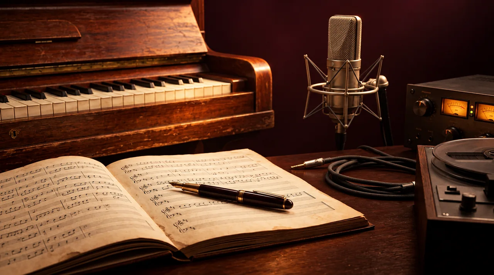

Ouça e edite três finais de um motivo original →
OUÇA · COMPONHA · COMPARE
Estúdio criativo Walamort

Crie uma peça original de quatro compassos em 4/4: uma nota ou pausa por pulso e um acorde por compasso. Explore suas ideias sem uma nota automática de criatividade.
Use fones de ouvido. Os sons começam ao clicar em um botão e param ao sair da página.
Seu projeto
Desafio criativo do dia
Pistas para ouvir
Estas observações não são erros obrigatórios: cromatismos, saltos e notas fora do acorde podem ser decisões musicais. Ouça seu efeito.
Aplicar o que aprendeu
Continue sua prática
Produção: ouça o que você muda
Loop original e arquivo local, mixagem, EQ, compressão, delay, reverb, A/B e exportação WAV. Experimente uma variável e registre sua decisão.
Abrir laboratório de produção · em inglês →